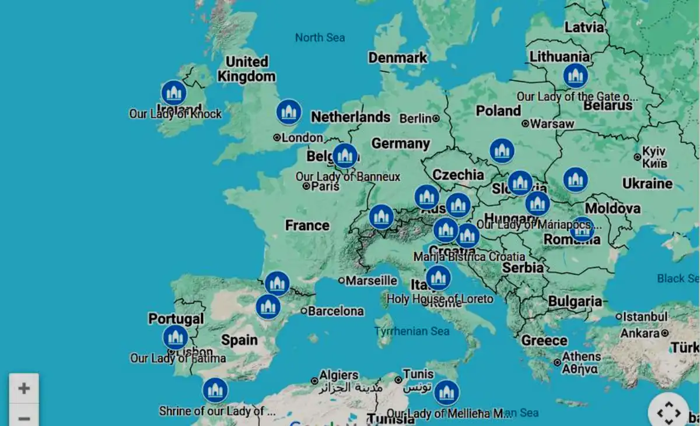

Hi, Enda here - I'm walking around Europe on the ancient pilgrim paths & visiting some Marian shrines along the way.
I live simply and stay at campsites or pilgrim shelters. As I walk along I like to enjoy Nature and dedicate the pilgrimage to all those in ill-health.
